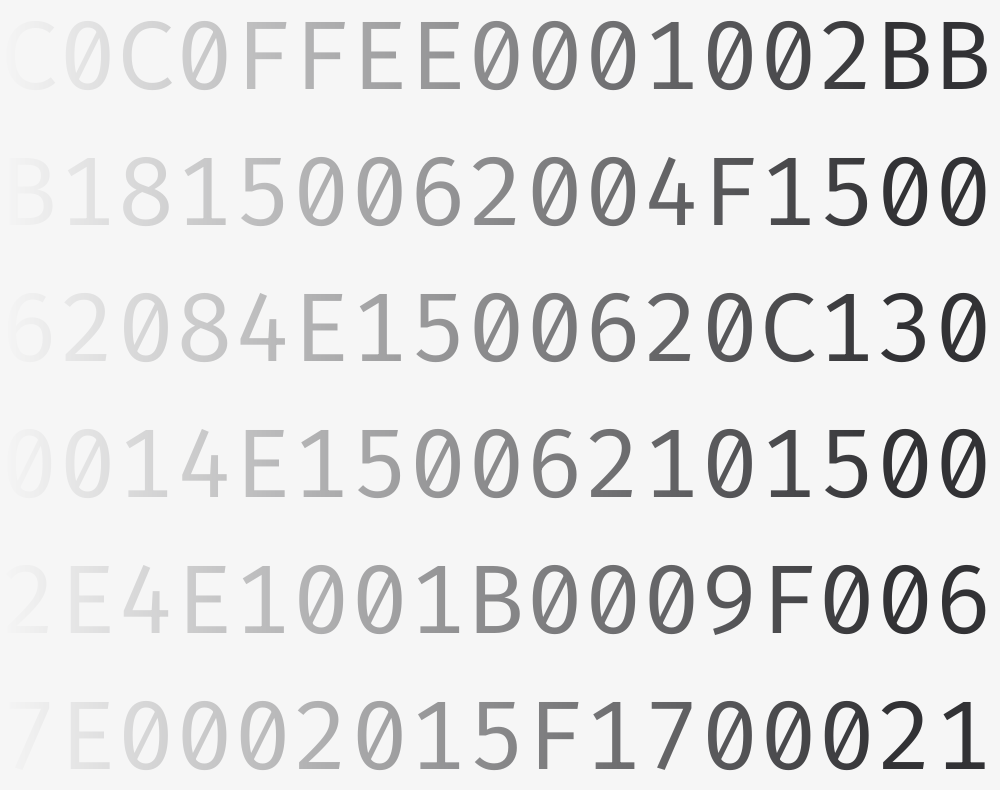
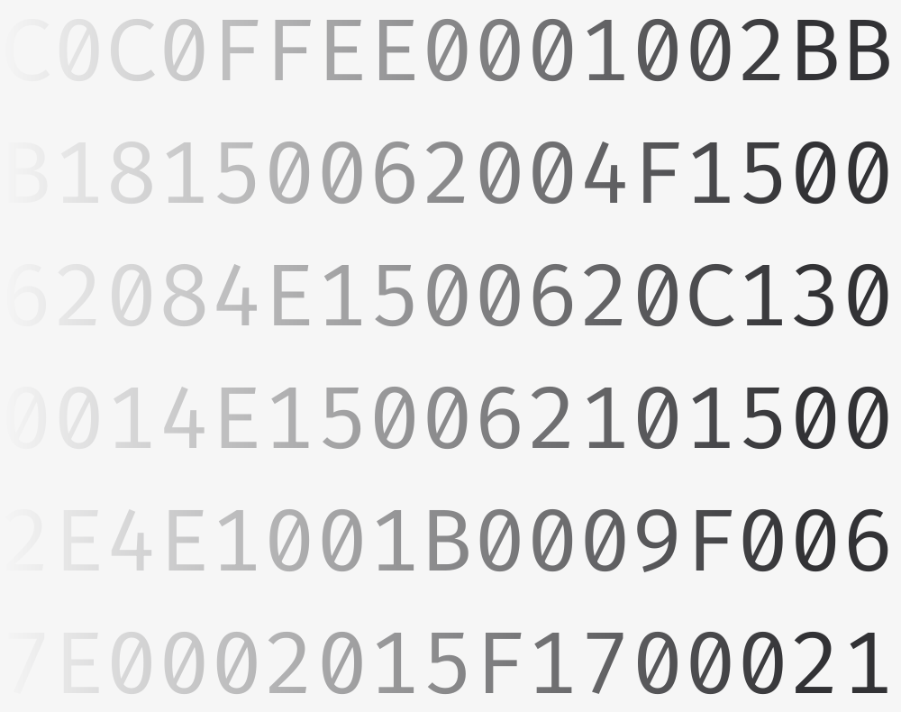

C0 Virtual Machine
A virtual machine for C0, a safe subset of the C language. The virtual machine, inspired by the JVM, runs arbitrary C0 code that has been compiled to bytecode.
Implementation
The virtual machine has the ability to run any C0 code that has been previously compiled to C0 bytecode. The implementation utilizes an operand stack, call stack, program
counter, local variable array, and both a function pool and constant pool. It is able to process over 40 separate operations, with functions ranging from performing basic arithmetic
to allocating memory on the heap. In addition to these operations, the virtual machine includes safety checks through contracts, assert statements, and loop invariants,
features essential to C0's unique focus on preventing unsafe behaviors.
Detailed reference on the C0 language can be found here, and documentation on C0's virtual machine can be found here.
Detailed reference on the C0 language can be found here, and documentation on C0's virtual machine can be found here.
Extension
On top of the ability to run all arbitrary C0 code, I extended the virtual machine's functionality to support the C1 language, which adds generic tagged pointers
and function pointers. Besides these two additional features, the C1 language is identical to C0, and includes safety checks that prohibit unsafe casts.
With this extension, the virtual machine has the ability to run all C0 and C1 programs, including all previous assignments from 15-122.
With this extension, the virtual machine has the ability to run all C0 and C1 programs, including all previous assignments from 15-122.